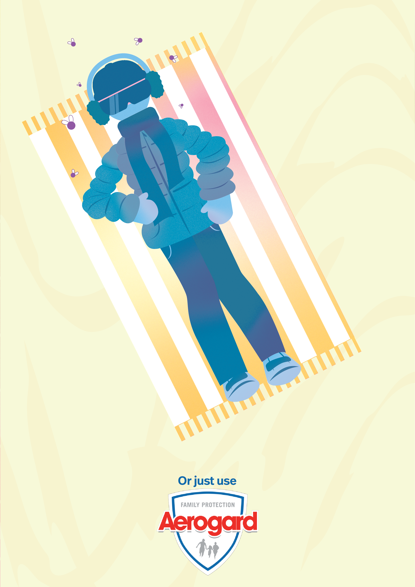
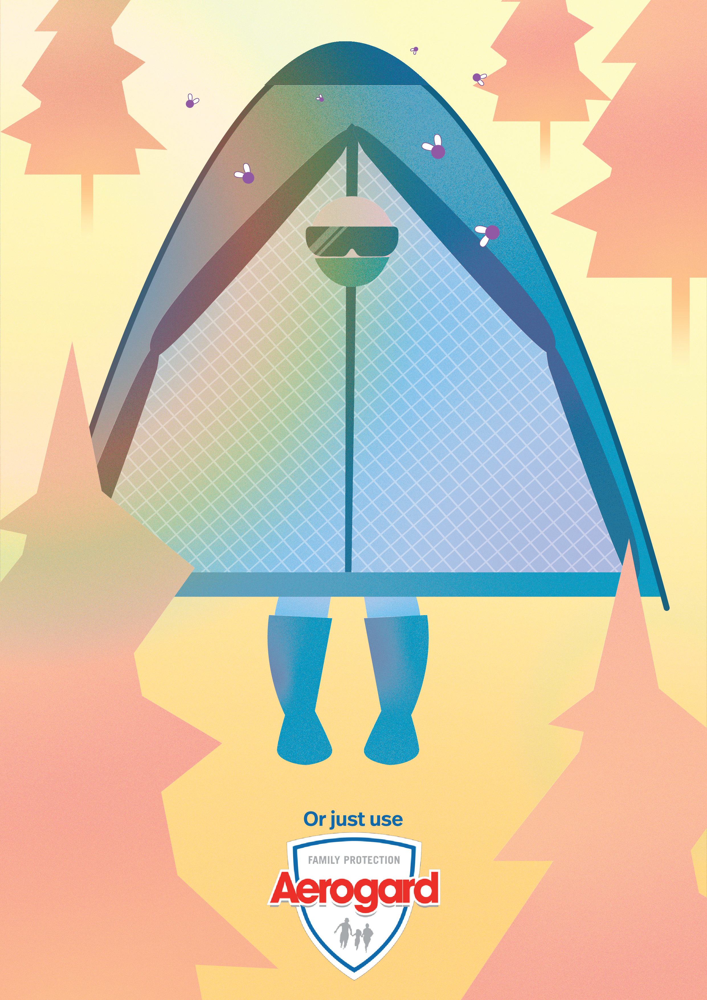

AEROGARD CAMPAIGN
Made with: Illustrator
Created for a print advertising brief targeting university students, this three-piece campaign uses humour and visual exaggeration to promote Aerogard Tropical Strength Roll-on. The illustrations explore the absurd lengths people might go to in an attempt to avoid being bitten, presenting exaggerated alternatives to a simple everyday solution. Each execution follows a consistent visual concept, using the recurring line "Or just use" alongside the Aerogard logo to deliver the campaign's message. Through playful illustrations and unexpected scenarios, the campaign encourages audiences to stay bite-free without overcomplicating their summer.


